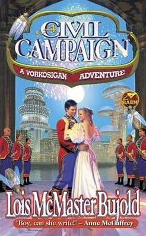
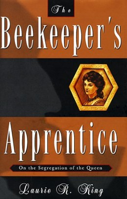

A Civil Campaign
by Lois McMaster Bujold
Review by Naomi Seyfer
A Civil Campaign is science fiction, but it's more than that. It's a romance, but it's more than that. It's a comedy of manners, but it's more than that. And a spy novel, and ...
Bujold does a masterful job of tying quite a few plot threads together neatly, and intersperses this with more character development than you can shake a stick at. This is the book that, more than any other in the series, makes me realize how Miles's story is mostly written from Miles's perspective -- and maybe he isn't as awesome as he makes himself out to be. He makes excuses for himself, generally acts entitled a lot of the time, and ... still manages to be sympathetic, because he's starting to realize how insufferable he's been all this time. When the person he's trying to impress isn't dazzled by his reality distortion field, he has to work on being a better person.
Add to that at least two great B plots involving such gems as bugs that extrude a superfood and new characters like Lord Donno Vorreateur and his entourage, and you have one of the strongest books yet in the Vorkosigan series.
The Beekeeper's Apprentice
By Laurie R. King
Review by Naomi Seyfer
The Beekeeper's Apprentice is Sherlock Holmes fanfic. I mean, don't get me wrong, it's published and all, but King says herself she started the book with the premise of "what if Sherlock Holmes was a woman?".
Sherlock isn't a woman in this book, but he does take a young woman, Marry Russel, as an apprentice. She's just as smart as he is, if a little less experienced, and has her own personality quirks -- and she's the protagonist, not Sherlock. One thing I like a little less, though, is that eventually Russell starts developing romantic feelings for Holmes, and they do eventually get married, once Holmes finds he can actually see her as his equal. Not only does this seem to go against the cannon of a mostly-asexual Holmes, but Russel and Holmes have quite an age difference, that I am not sure is beliveably overcome to form a social-power equality, simply by dint Russel being *that* awesome.
Somehow, this all ends up working remarkably well as its own setup for a set of suspense novels. They're not really mystery, in the calssical sense, unfortunately. You don't end up guessing whodoneit until the author shows you how you could have guessed all along, but it's a good suspenseful story nonetheless.